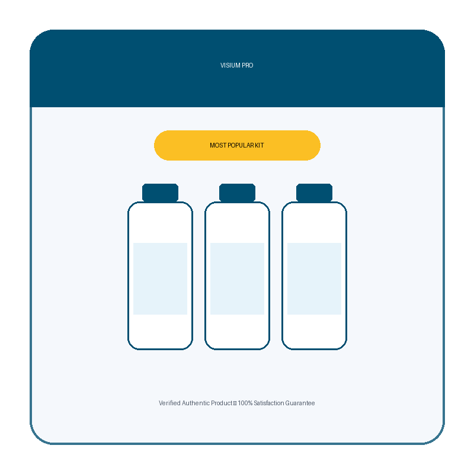

What Is Visium Pro And How Does It Work?
Squinting at street signs. Holding the phone a little further away every year. Blaming the lighting when the print on a menu suddenly seems smaller than it used to be. Most people write it off as an unavoidable part of getting older — something to manage with a stronger pair of glasses and nothing more.
But eye doctors point to a different culprit behind a lot of that gradual blur: chronic oxidative stress on the retina. Years of screen exposure, blue light, and everyday free-radical damage slowly wear down the delicate cells responsible for sharp, clear sight. The eyes do not "wear out" on their own schedule — they lose ground when they are not given the nutrients needed to defend and repair themselves.
Think of the retina like a camera sensor that never gets cleaned or serviced. Even the best sensor produces grainier, dimmer images over time if dust and wear are left unaddressed. The hardware is not necessarily broken — it just is not being maintained.
Visium Pro is a daily capsule built around a focused blend of vision-supporting nutrients — led by Vitamin A, Vitamin C, Vitamin E, Zinc, Selenium, and Chromium — formulated to help defend the retina against oxidative damage, support night vision and macular health, and encourage steadier, more comfortable focus throughout the day. No prescription, no invasive procedure, no harsh stimulants.
This is not an overnight fix. The visual strain built up gradually, so restoring comfort and clarity takes consistent daily use. Many people report reduced eye fatigue and steadier focus within the first few weeks, with fuller improvements in visual comfort building over 60 to 90 days of continuous use.
Visium Pro Ingredients
Every ingredient in the formula targets a specific piece of long-term eye health — from the antioxidant defense the retina needs, to the mineral support that keeps its structure intact, to the balanced blood sugar levels that protect delicate ocular tissue.
- Vitamin A (900mcg): Essential for night vision and cornea protection, included to maintain the eyes' ability to see in low light and protect the outer surface of the eye.
- Vitamin C (200mg): A powerful antioxidant that protects eyes against free radical damage, helping maintain the health of the blood vessels in the eyes.
- Vitamin E (50mg): Selected to protect eye cells from oxidative stress and degeneration, supporting long-term cellular health within the visual system.
- Zinc (40mg): A crucial mineral for maintaining a healthy retina and preventing vision loss, ensuring the eyes can function efficiently over time.
- Selenium (70mcg): Works alongside vitamins to protect against oxidative eye damage, strengthening the natural defenses of the eyes against environmental stress.
- Chromium (120mcg): Included to help maintain balanced blood sugar levels, which is vital for protecting the delicate structure of the retina.
The blend is deliberate. Antioxidant vitamins neutralize the free radicals that wear down retinal cells over time. Zinc and selenium reinforce the eye's own structural defenses. Chromium keeps blood sugar steady, protecting the fine blood vessels that feed the retina — together working to support sharper, more comfortable, longer-lasting vision.
Visium Pro Side Effects
The formula is built from vitamins and trace minerals the body already knows how to process — not synthetic compounds or aggressive stimulant blends.
Visium Pro is manufactured in an FDA-registered, GMP-certified facility. Every ingredient is carefully evaluated for quality, purity, and safety before it goes into a capsule, helping ensure the formula is free from unnecessary additives or harmful contaminants.
Among the growing number of people who have used the formula, there are no widespread reports of adverse reactions when taken as directed. The capsule is easy to swallow and taken once daily, fitting into a normal morning routine without disruption.
As with any supplement, anyone who is pregnant, nursing, managing a medical condition, or taking prescription medication should consult a healthcare provider before starting.
Visium Pro Dosage
One capsule a day, taken in the morning with a glass of water. That is the entire protocol.
Each bottle of Visium Pro contains a full 30-day supply. Many users choose to take it before breakfast, pairing the antioxidant and mineral support with the start of the day's screen and light exposure.
Consistency is what drives results — the visual strain this formula targets built up over years, and the ingredients work cumulatively over weeks, not hours. Skipping days slows the process down. People who take it daily without interruption for a full 60 to 90 days report the most noticeable changes in clarity, focus, and eye comfort.
This is exactly why Visium Pro is offered in multi-bottle kits — locking in a longer supply removes the gap between orders that breaks the streak and resets progress.
Visium Pro – Refund Policy
Every order of Visium Pro is backed by a 60-day, 100% money-back guarantee.
That is a full 60 days to take the capsules daily, follow the routine, and judge the results for yourself — how your eyes feel by the end of a long screen day, how comfortable reading small print has become, how often you reach for a stronger pair of glasses. If you are not satisfied, simply contact customer support within the 60-day window to request a refund; you may be asked to return any unused bottles, with return shipping the responsibility of the customer.
The guarantee exists because the company stands behind what the formula does with consistent use, and is willing to back that with a full refund if it does not deliver. For complete terms and to confirm the current guarantee window, visit the official Visium Pro website directly.
Visium Pro Customer Reviews
 Robert Harmon
Phoenix, AZ
Verified Purchase – 6 Bottles
Robert Harmon
Phoenix, AZ
Verified Purchase – 6 Bottles
"I spent years telling myself the blur at the end of the day was just from staring at spreadsheets too long. My daughter found Visium Pro after reading about it online and ordered me a bottle. The first change I noticed was how much less tired my eyes felt by 6pm. Two months in, I'm reading the newspaper without holding it at arm's length. I'm on my sixth bottle because I finally feel like my eyes are keeping up with me instead of the other way around."
 David Moretti
Chicago, IL
Verified Purchase – 3 Bottles
David Moretti
Chicago, IL
Verified Purchase – 3 Bottles
"Ten hours a day in front of two monitors will do a number on your eyes, and mine were constantly dry and strained by evening. A coworker who'd been taking Visium Pro for a few months recommended it, and I figured it was worth a try. Within three weeks the end-of-day strain was noticeably lighter. Three bottles in and I'm not reaching for eye drops nearly as often."
 Dorothy Sullivan
Denver, CO
Verified Purchase – 3 Bottles
Dorothy Sullivan
Denver, CO
Verified Purchase – 3 Bottles
"After sixty my night vision had gotten bad enough that I stopped driving after dark altogether. My sister sent me a three-bottle kit of Visium Pro without much explanation, just said to give it two months. Around week six I noticed headlights on the highway did not scatter the way they used to. I'm not ready to call myself night-vision-proof again, but I'm driving after dinner for the first time in years."
Visium Pro – Where To Buy
Visium Pro is available exclusively through its official website. It is not sold in pharmacies, retail stores, or on Amazon, eBay, Walmart, or any other third-party marketplace.
This matters more than it seems. Several users have reported finding bottles on third-party platforms that look similar but may not be authentic, which raises concerns about quality, safety, and ingredient integrity. These sellers are not authorized, and products purchased outside the official source are not covered by the manufacturer's 60-day money-back guarantee.
The official website is also the only place to access multi-bottle pricing and current shipping offers. There are no legitimate coupon codes circulating elsewhere; the pricing shown on the official page is the real pricing.
To ensure you're getting the authentic product, most users choose to visit the official website directly.
Is Visium Pro A Scam?
Nothing about the formula, the manufacturing, or the guarantee points in that direction.
The ingredients — Vitamin A, Vitamin C, Vitamin E, Zinc, Selenium, and Chromium — are well documented, dosed at meaningful amounts, and produced in an FDA-registered, GMP-certified facility. The guarantee provides a full 60 days to judge results directly. The pattern in customer reviews lines up with what the formula is designed to do: defend the retina against oxidative stress, support night vision and macular health, and ease the day-to-day strain of screens and aging eyes.
No supplement replaces a comprehensive eye exam or medical treatment for a diagnosed condition, and results vary from person to person. If you have struggled with blurry vision or eye fatigue for years with no improvement, healthy skepticism is understandable. But a formula backed by a full refund window is not asking for blind trust — it is asking to be tried and judged on results.
Try it for 60 days. If your results haven't changed, send it back and you are out nothing but a few minutes of your time.
As with any supplement, consult a healthcare professional if you have an existing condition or take prescription medication.

For those who want to verify product details or check current availability, the official Visium Pro website remains the safest and most reliable option.